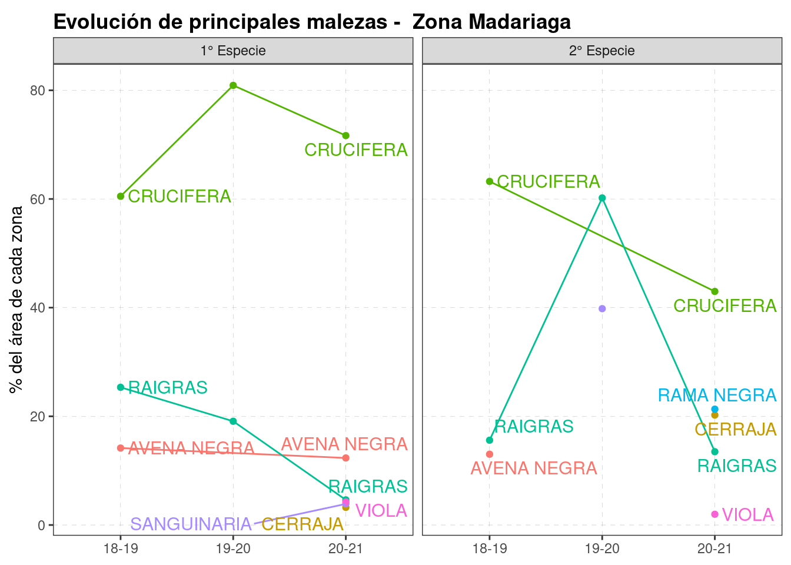

8 Malezas
knitr::opts_chunk$set(echo = TRUE, message=FALSE, warning=FALSE)
pacman::p_load(tidyverse, fuzzyjoin)
load(here::here("data/data.Rdata"))
source(here::here("0 themes.R"))dat %>%
select(campana, Zona, cultivo_de_cosecha, superficie, starts_with("especie")) %>%
mutate(across(starts_with("especie"),
~stringi::stri_trans_general(., "Latin-ASCII"))) %>% #sacar acentos
mutate(across(starts_with("especie"),
~str_to_upper(gsub(',', '\\.',.)))) %>% # UPPER + sacar ","
mutate(across(starts_with("especie"),
~str_replace(., "SP.", ""))) %>% # sacar SP.
mutate(across(starts_with("especie"),
~str_trim(.))) -> adv_herb #sacar espacios antes-despadv_herb %>%
filter_at(vars(starts_with("especie")), any_vars(!is.na(.))) %>%
pivot_longer(-(campana:superficie), names_to = "nivel", values_to = "maleza")%>%
filter(!maleza %in% c(NA, "OTRO", "OTRA", "VARIAS", "ROSETA"))%>%
count(maleza) ## # A tibble: 14 x 2
## maleza n
## <chr> <int>
## 1 AVENA NEGRA 47
## 2 CAPIQUI 4
## 3 CARDOS 4
## 4 CRUCIFERAS 266
## 5 PAPA 3
## 6 PEREJILILLO 1
## 7 POA 1
## 8 RAIGRAS 224
## 9 RAIGRASS 1
## 10 RAMA NEGRA 61
## 11 SANGUINARIA 15
## 12 SONCHUS 53
## 13 TRIGO 2
## 14 VIOLA 4malezas_ref <- gsheet::gsheet2tbl("https://docs.google.com/spreadsheets/d/1cTzo36jHRULfBf8c83TDpauxiwHrxeKrGprUUxLRzm0/edit#gid=1182890772")
malezas_ref %>% print(n=Inf)## # A tibble: 33 x 4
## genero sp n_comun n_grupo
## <chr> <chr> <chr> <chr>
## 1 ALTAMISA <NA> ALTAMISA <NA>
## 2 <NA> <NA> AVENA NEGRA GRAMINEA
## 3 IPOMOEA PURPUREA BEJUCO <NA>
## 4 BORRERIA DENSIFLORA BORRERIA <NA>
## 5 ECHINOCLOA CRUSGALLI CAPIN <NA>
## 6 CIRSIUM VULGARE CARDO <NA>
## 7 BROMUS <NA> CEBADILLA GRAMINEA
## 8 CYPERUS ROTUNDUS CEBOLLIN <NA>
## 9 SONCHUS OLERACEUS CERRAJA <NA>
## 10 CHLORIS <NA> CHLORIS GRAMINEA
## 11 COMMELINA <NA> COMMELINA <NA>
## 12 PAPPOPHORUM <NA> CORTADERA <NA>
## 13 <NA> <NA> CRUCIFERA <NA>
## 14 DIGITARIA <NA> DIGITARIA <NA>
## 15 ELEUSINE <NA> ELEUSINE <NA>
## 16 EUPHORBIA <NA> EUPHORBIA <NA>
## 17 GNAPHALIUM <NA> GNAPHALIUM <NA>
## 18 GOMPHRENA <NA> GOMPHRENA <NA>
## 19 CYNODON DACTYLON GRAMON GRAMINEA
## 20 LAMIUN <NA> LAMIUN <NA>
## 21 ZEA MAIZ <NA> MAIZ RR <NA>
## 22 <NA> <NA> MANI GUACHO <NA>
## 23 BASSIA <NA> MORENITA <NA>
## 24 PARIETARIA DEBILIS OCUCHA <NA>
## 25 <NA> <NA> RAIGRAS GRAMINEA
## 26 CONYZA <NA> RAMA NEGRA <NA>
## 27 <NA> <NA> SANGUINARIA <NA>
## 28 SENECIO PAMPEANUS SENECIO <NA>
## 29 <NA> <NA> SONCHUS <NA>
## 30 SORGHUM HALEPENSE SORGO DE ALEPO GRAMINEA
## 31 TRICHLORIS <NA> TRICHLORIS <NA>
## 32 VIOLA ARVENSIS VIOLA <NA>
## 33 AMARANTHUS QUITENSIS YUYO COLORADO <NA># browseURL("https://docs.google.com/spreadsheets/d/1YL6vwgVu1nyMuZLRZw5uMav7cMt2mDXd7mI2S8Q6Q7c/edit#gid=950522321")
herb_long <- adv_herb %>% #count(especie_principal)
filter_at(vars(starts_with("especie")), any_vars(!is.na(.))) %>%
pivot_longer(-(campana:superficie), names_to = "nivel", values_to = "maleza")%>%
filter(!maleza %in% c(NA, "OTRO", "OTRA", "VARIAS", "ROSETA")) %>%
stringdist_left_join(malezas_ref %>% drop_na(genero),
by = c(maleza = "genero"), max_dist = 1) %>%
stringdist_left_join(malezas_ref %>% drop_na(n_comun),
by = c(maleza = "n_comun"), max_dist = 1) %>%
mutate(maleza = coalesce(n_comun.x,n_comun.y )) %>%
select(campana:nivel, maleza)%>%
group_by(campana, Zona, nivel, maleza)%>%
summarise(var_sup = sum(superficie, na.rm = TRUE))%>%
group_by(campana, Zona, nivel) %>%
mutate(Zona= as.factor(Zona),
porcent=var_sup/sum(var_sup)*100,
nivel = recode(nivel, especie_principal = "1° Especie",
especie_secundaria = "2° Especie",
especie_terciaria= "3° Especie")) %>%
drop_na(maleza)
herb_long## # A tibble: 98 x 6
## # Groups: campana, Zona, nivel [26]
## campana Zona nivel maleza var_sup porcent
## <chr> <fct> <chr> <chr> <dbl> <dbl>
## 1 18-19 Costa 1° Especie AVENA NEGRA 419 11.9
## 2 18-19 Costa 1° Especie CERRAJA 415 11.8
## 3 18-19 Costa 1° Especie CRUCIFERA 1967 55.8
## 4 18-19 Costa 1° Especie RAIGRAS 655 18.6
## 5 18-19 Costa 1° Especie RAMA NEGRA 38 1.08
## 6 18-19 Costa 1° Especie SANGUINARIA 30 0.851
## 7 18-19 Costa 2° Especie AVENA NEGRA 299 7.41
## 8 18-19 Costa 2° Especie CERRAJA 661 16.4
## 9 18-19 Costa 2° Especie CRUCIFERA 1353 33.5
## 10 18-19 Costa 2° Especie RAIGRAS 1142 28.3
## # … with 88 more rowsplots_herb <-
herb_long %>%
filter(!nivel == "3° Especie")%>%
group_by(Zona) %>%
nest() %>%
mutate(plot = map2(data, Zona,
~ggplot(data = .x,
aes(x = factor(campana),
y = porcent,
col = maleza,
group = maleza))+
geom_line()+
geom_point()+
labs(x = NULL, y = "% del área de cada zona",
title = paste0("Evolución de principales malezas - Zona ", .y))+
guides(col="none")+
facet_wrap(~nivel)+
ggrepel::geom_text_repel(
data = .x %>% filter(Zona == .y, campana == "20-21"),
aes(label = maleza), size =4, nudge_x = 0.2) +
ggrepel::geom_text_repel(
data = .x %>% filter(Zona == .y, campana == "18-19"),
aes(label = maleza), size =4, nudge_x = 0.2) +
theme_bw2
))
plots_herb$plot## [[1]]
##
## [[2]]
##
## [[3]]